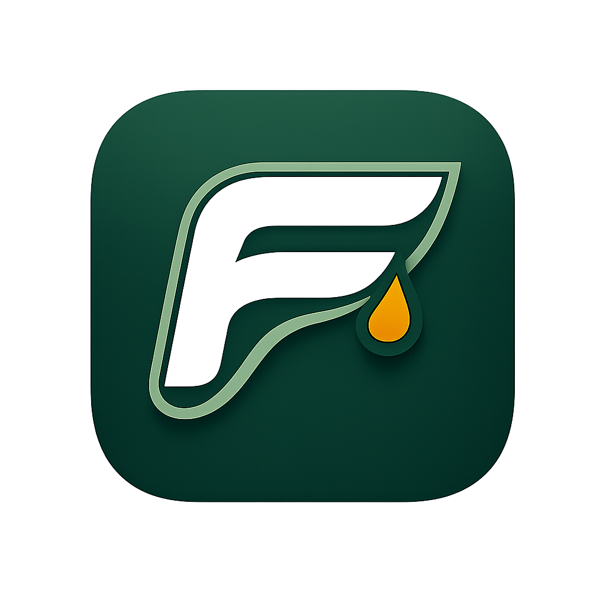

01
Connect workouts
Pull recent and upcoming sessions from training sources like Strava, or enter key events manually when planning data is incomplete.

FuelSync Endurance fueling opsTraining-connected fueling
FuelSync translates endurance workouts into practical pre, during, and post fueling guidance, then turns the next seven days of training into a replenishment plan.
40 to 60g carbs before session.
Electrolytes. Optional 20 to 30g carbs depending on duration.
60 to 80g carbs plus 20 to 25g protein.
How it works
01
Pull recent and upcoming sessions from training sources like Strava, or enter key events manually when planning data is incomplete.
02
Use explicit logic for duration and intensity to bucket each session into fueling classes such as tempo, intervals, or long endurance.
03
Surface guidance, aggregate category demand, and map the forecast to a brand catalog so the athlete knows what to buy before the week starts.
Weekly plan
Thursday
TempoPre: 40 to 60g carbs
During: Electrolytes + optional carbs
Post: 60 to 80g carbs + 25g protein
Friday
Easy mediumPre: Optional light carb top-up
During: Water + electrolytes
Post: Balanced meal + protein
Saturday
Long endurancePre: 80 to 120g carbs
During: 45 to 90g carbs/hr + sodium
Post: 1.0 to 1.2 g/kg carbs + 25 to 30g protein
Sunday
RecoveryPre: Normal meals
During: Hydrate normally
Post: Protein and total energy intake
F2C-first MVP
Roadmap
Account flow, athlete profile, visual system, and MVP information architecture.
Real Strava OAuth, sync, normalization, and workout persistence.
Workout classification, weekly recommendations, and event-aware adjustments.
Brand catalog, cart generation, export, and outbound commerce handoff.